高1の作品
入濱菫
臨書『真草千字文』
- 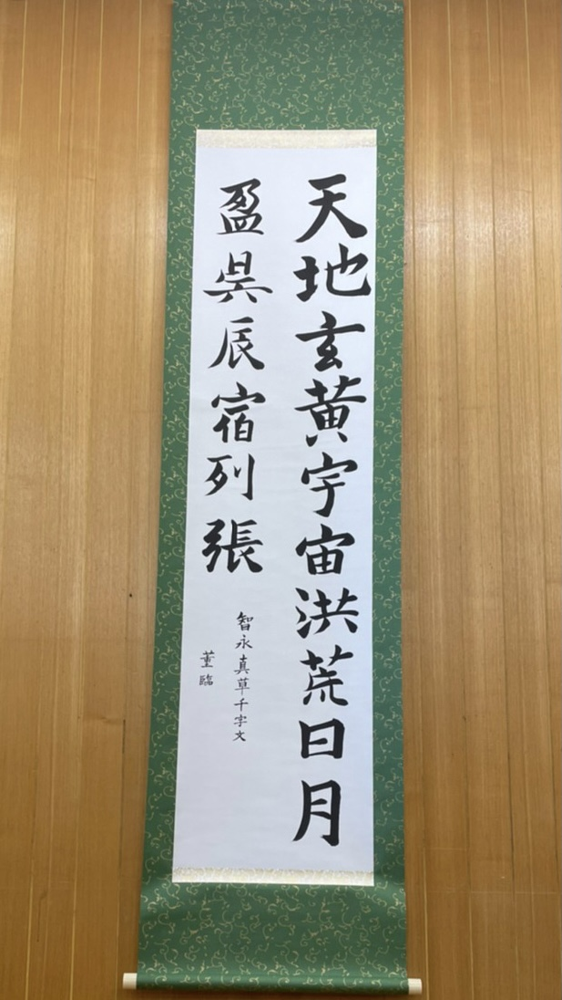
王羲之の7代目の子孫・智永が王羲之の書法を受け継いで書いたもの。
''千字文''とは漢字の学習のために作られた漢詩で、千文字の異なる漢字が使われている。
創作

この作品は、秋をテーマにした作品です。字に秋の色を取り入れたり、紅葉を添えることによって秋の場面を感じられるように制作しました。
酒井ちひろ
臨書『墓誌銘集』

臨書は墓誌銘集から選びました。楷書で、太く短くを意識して書きました。
創作

創作は春をテーマに桜と風景麗と書きました。春に咲く桜は風景を麗しくしてくれる存在だと思ったのでこの字にしました。桜も全て手書きで、色塗りもしました
田中結羽
臨書
- 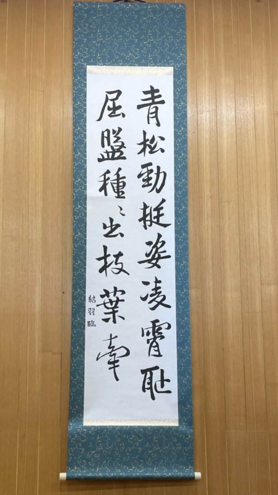
創作
- 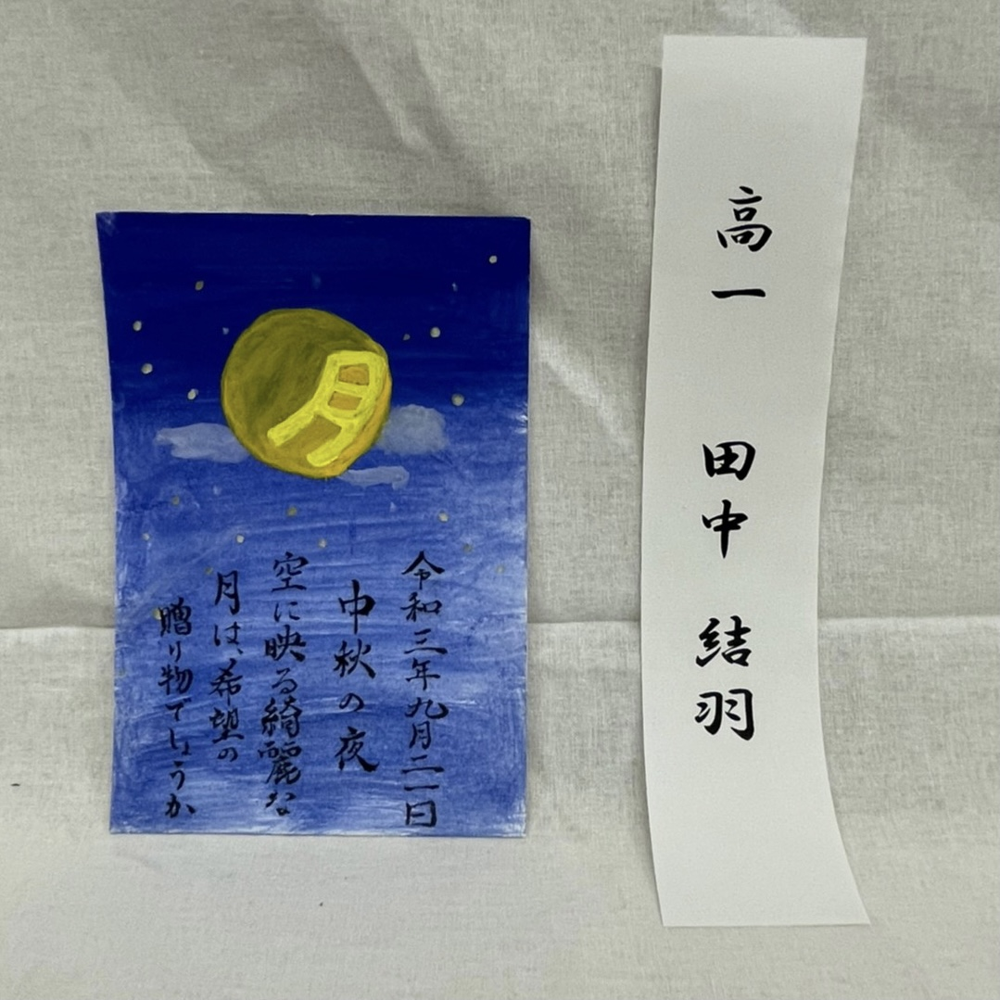
新型コロナウイルスに苦しまれている世の中今年の中秋の名月は満月だったので希望を表していると感じて作りました。
原田佳奈
臨書『孔子廟堂碑』
- 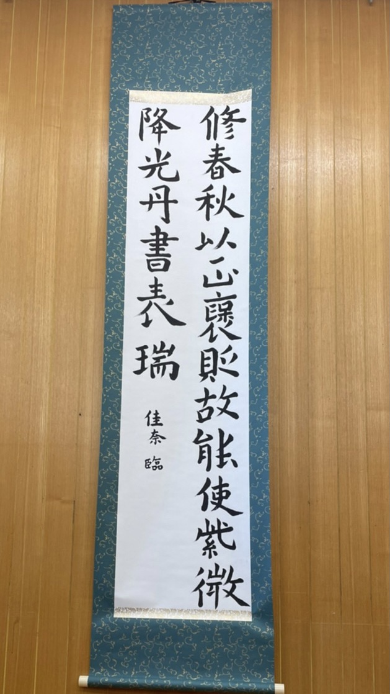
中国、唐の太宗が長安の国子監内に孔子廟を改築し、その完成を記念して建てられた碑で、皇帝の命により唐の四大家の一人、虞世南が撰書したものです。書体は、楷書体です。
創作
- 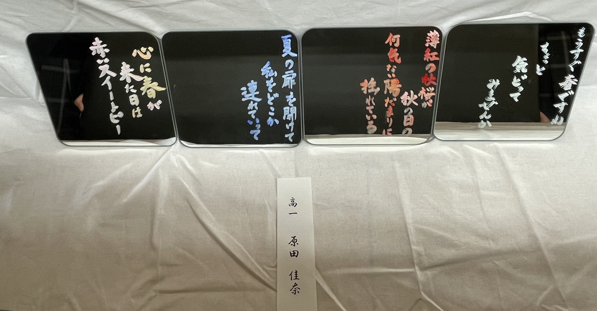
私が思う季節ごとの歌を書きました。
鏡に書いたのは、その季節の空はどんななのかなど、普段あまり目のいかないとこに気づく手助けになるといいなとおもったからです。
古見美有
創作

創作は「清明」という言葉にしました。
清らかで明るく、生き生きとした様子を意味する「清浄明潔」を略した言葉で、春に草木がいっせいに花を咲かせ活気あふれる時期を表すために刺繍で字と周りの花を縫って作りました。
松田莉奈
臨書『真草千字文』

千字文とは、子供に漢字を教えたり、書の手本として使うために用いられた漢文の長詩です、1000の異なった文字が使われていて、全て違った文字で、一字も重複していません。
創作
- 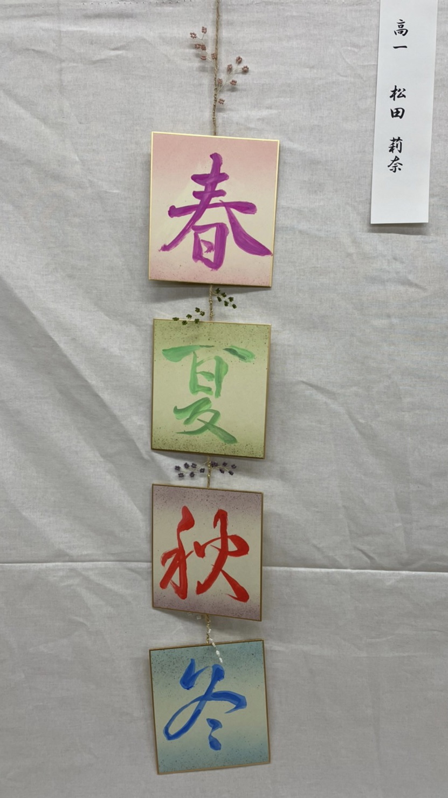
- 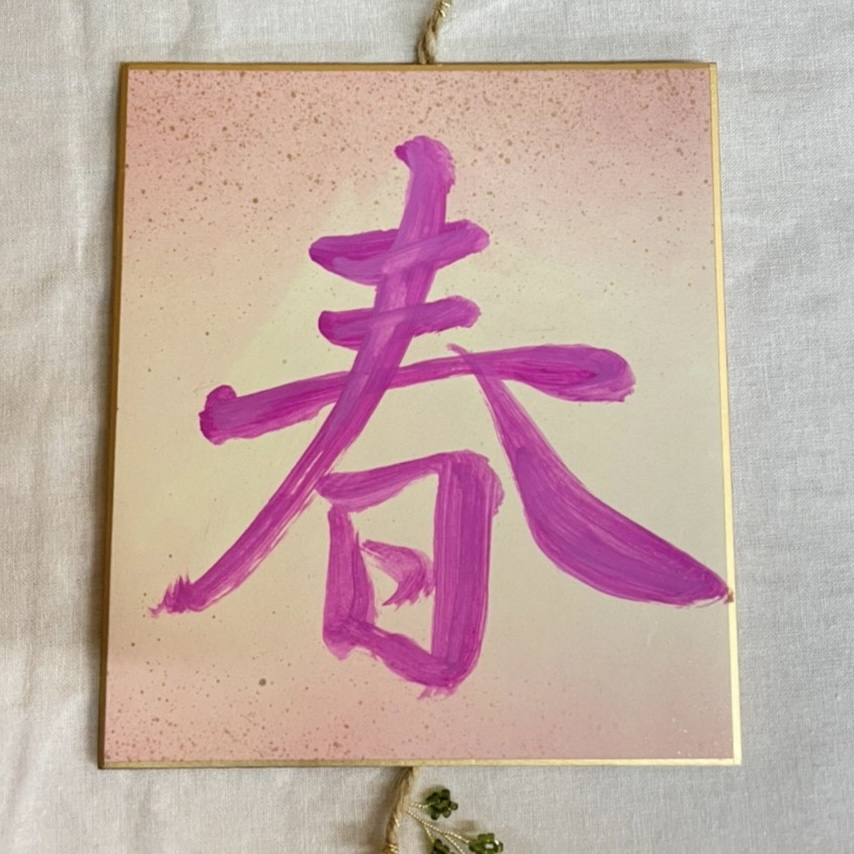
- 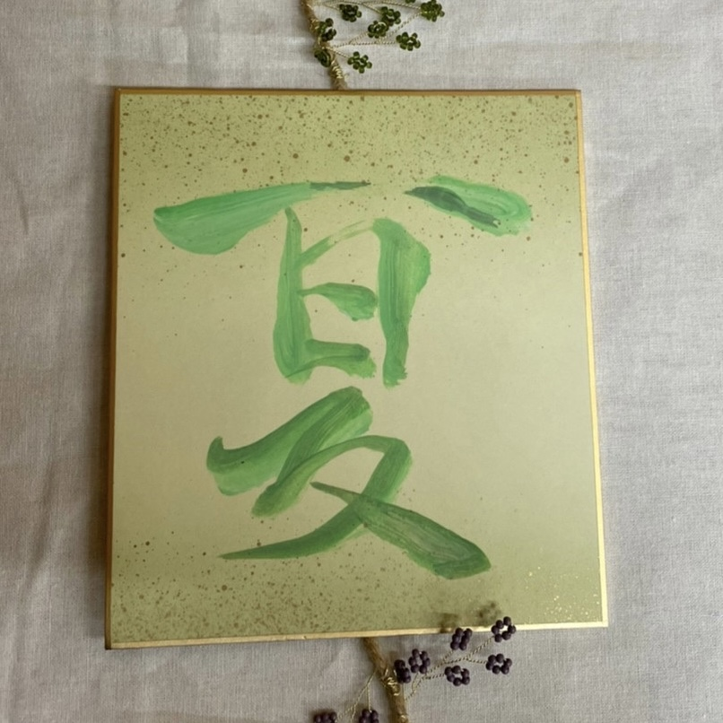

- 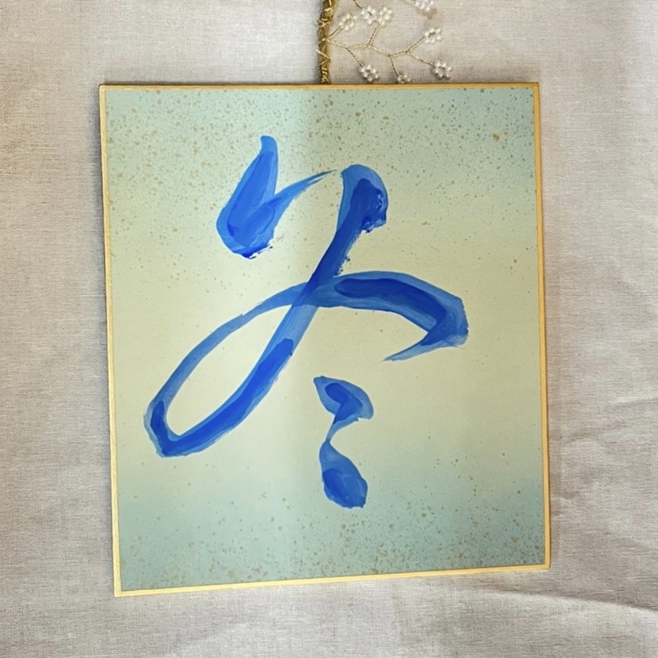
今回のテーマが春夏秋冬なので字はそのまま書きました。
文字の色と色紙の色をその季節にあった色に揃えて季節を感じられるようにしました。
三田早希子
臨書『九成宮醴泉銘』

臨書は欧陽詢書「九成宮醴泉銘」から引用しました。 この文章には、「真珠や璧玉が輝き照り映え、金色と碧玉のように光を放っているようだ。 夕陽は雲や霞を赤々と染め、太陽と月の光を蔽い隠さんばかりの状況である。」という意味があります
創作

「春濤」とは、春の波を表す季語です。海を意識したフォトフレームに書き、春の波は大きくても穏やかなことを表現しました。
栁澤怜花
臨書『真草千字文』
- 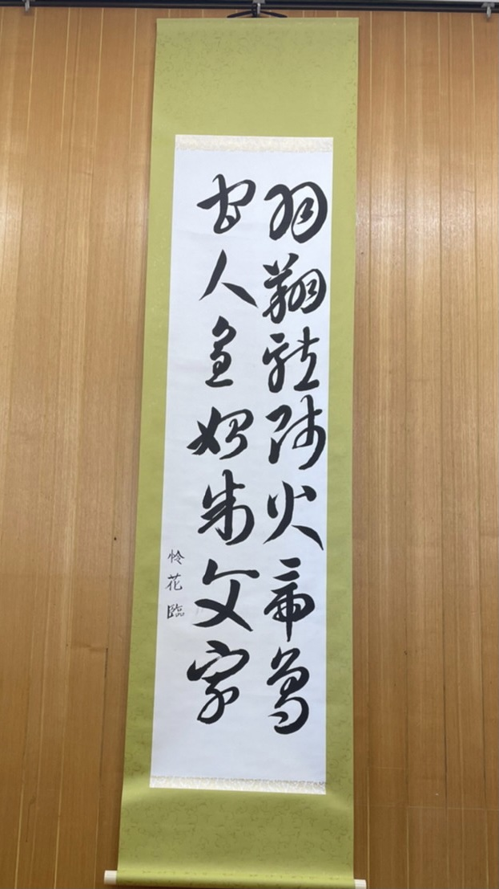
「真草」とは、真書（楷書）と草書の2つの書体のこと。「千字文」とは、子供に漢字を教えたり書の手本として用いられた漢文の長詩で、1000字の異なった文字が使われている。
創作
- 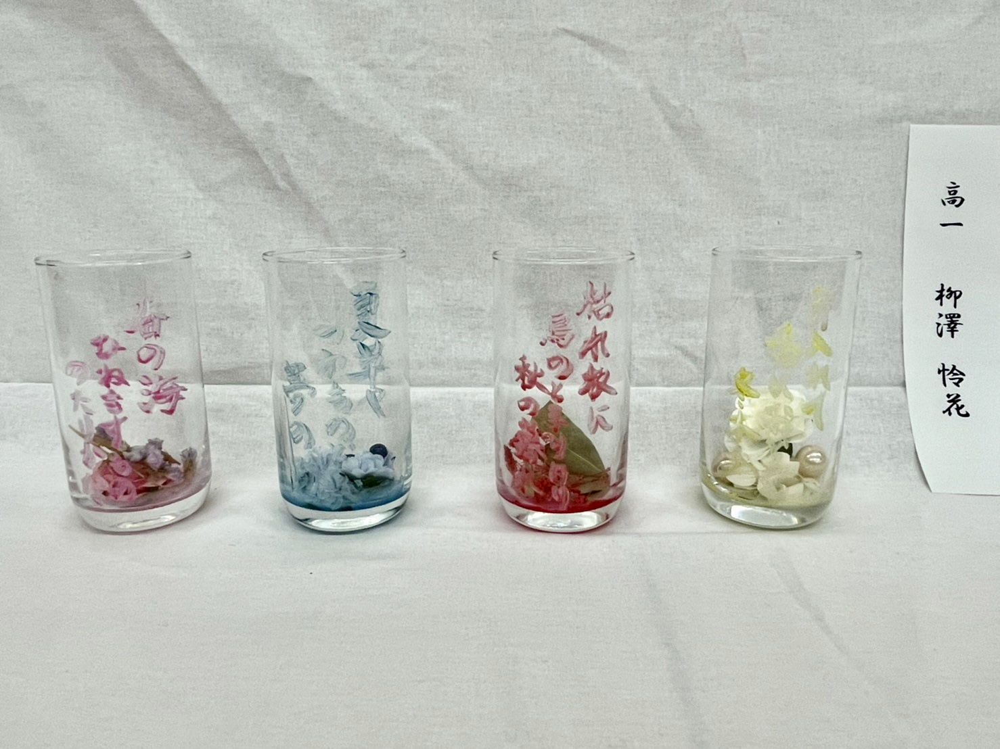
- 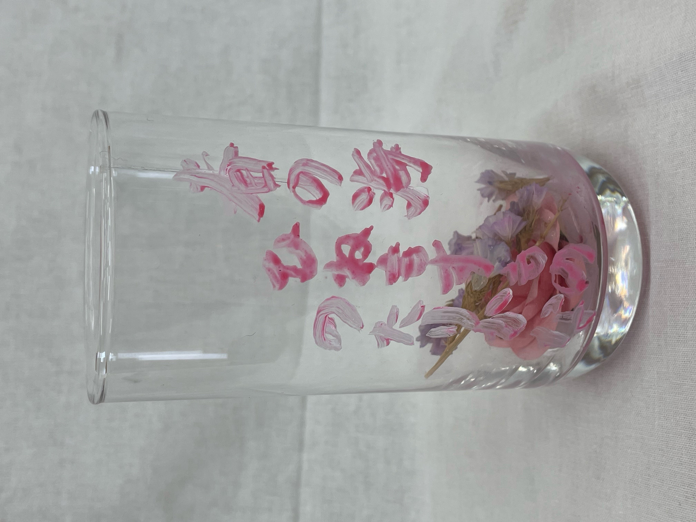


- 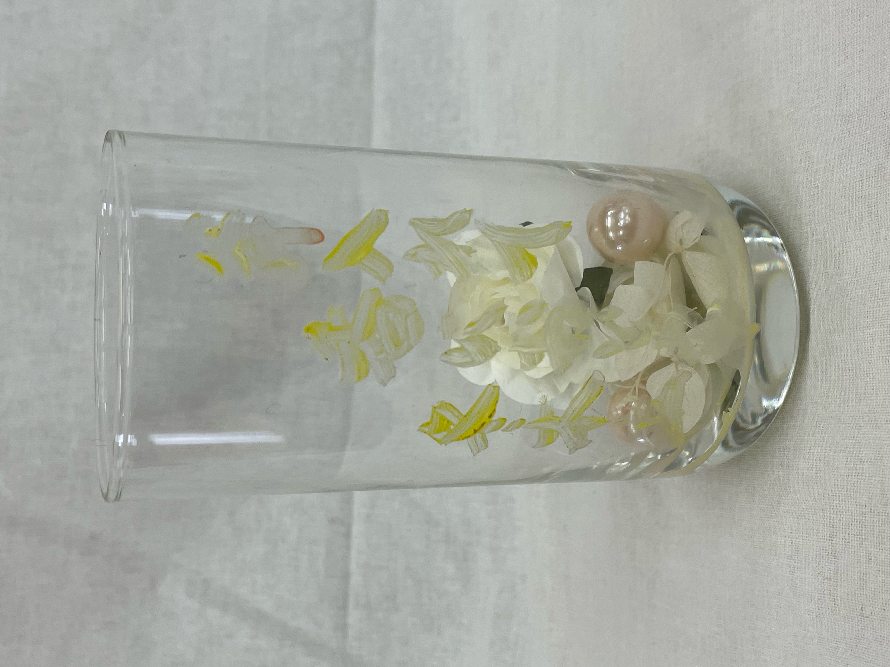
四つのコップに書いた俳句はどれもその季節を代表する俳句になっていて、色使いと造花でその季節を感じられるように工夫しました。
吉村彩希
臨書

創作
- 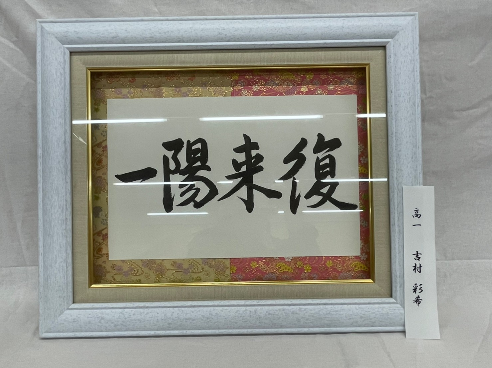